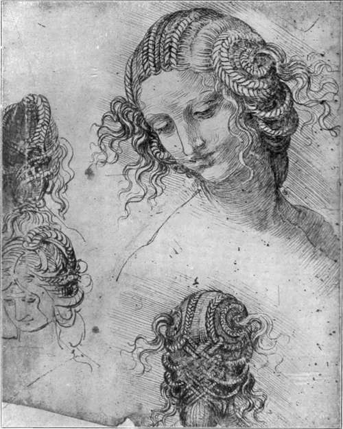

The Pictures. Part 13
Description
This section is from the book "Leonardo Da Vinci", by Edward McCurdy. Also available from Amazon: Leonardo Da Vinci.
The Pictures. Part 13
The curling auburn hair escaping at either side from the veil, and just brushing the bosom as it falls, has perhaps the most resemblance to the earlier work. The eyes look out at you, gray, devoid alike of eyelash or eyebrow, heavy-lidded, languorous yet strangely intent. The face is full and of a southern type, and the lips are smiling. She was listening to music while he painted, so Vasari tells us. Beyond the balcony a strip of herbage has a warm russet glow, and road and river wind away on either side in labyrinthine coils amidst the fretted rocks to where, in the far distance, shadows are deep and still water lies among the hills.
Each and all of his landscape backgrounds have, as common type, the waterways of the Friulian Alps. But the result, as here conceived, is instinct with the spirit of pure romance. Never did water wind around the rocks so fitfully or hills thus tremble in foam-flung mirage!
Thus, on the very confines of fantasy, and girt about with the suggestions of strange lights and furtive shadows he has created in this portrait of Madonna Lisa, third wife of a Florentine official, a myth-of the embodiment of which men dream as of the eternal enigma of womanhood.
The studies for the composition of the Madonna with S. Anne show the progress of two quite distinct conceptions.
In the one of these which reached its ultimate stage of execution in the cartoon now in the Diploma Gallery of the Royal Academy, the heads of the Virgin and of S. Anne are on the same level, and Christ is in the lap of the Virgin, and being held in her arms is bending over towards S. John.
In that followed in the Louvre picture the head of S. Anne is the apex of a triangle, and the Virgin is bending down holding Christ, who is on the ground fondling a lamb.
The only motive recurring in both is that the Virgin is seated in the lap of S. Anne.
Three drawings preserve the connection of the two. compositions in the embryonic stages.
One in the British Museum-a pen-drawing washed with Indian ink-is a preliminary study for the Academy Cartoon.
The head of the Virgin is distinctly more in profile in the drawing, and the kneeling figure of S. John is bending forward at a sharper angle, but with these exceptions and the omission of the raised hand of S. Anne the drawing closely resembles the Cartoon in every important detail of composition.
Below, on the same sheet, are three sketches for the same composition-two of the Virgin and Child, the third of the Child.
Very closely connected with this is the drawing in the Louvre (His de la Salle Collection, No. 120) in black chalk, gone over with the pen, which Mr. Berenson considers as denoting a stage between the Cartoon and the Louvre picture. The heads of the Virgin and S. Anne are practically level. Christ, held in the Virgin's arms, turns to the right and looks at S. Anne. There may be a fourth figure representing S. John in the same position as in the Cartoon, but the condition of the drawing is so bad that one cannot speak with any degree of certainty.
The composition of the Louvre picture is clearly foreshadowed in the pen-drawing at Venice. The girlish figure of the Virgin is seen completely in profile, and it is lowered half a head below that of S. Anne. The Child is held in her lap, but is bending down over a lamb. Another head in profile immediately above that of Christ seems to be a re-casting of the attitude of the head of the Virgin as more bending forward, and represents an intermediate stage between the attitude in the drawing and in the Louvre picture. The landscape background roughly indicates the outlines of that in the Louvre picture.
The three drawings suggest the priority of the conception followed in the Academy Cartoon. Where the Venice drawing approximates to the Louvre picture it seems a divergence from an earlier type.
This conclusion derives some support from a comparison of the two compositions.
In the Cartoon the figure of S. Anne is almost completely hidden behind that of the Virgin, and the result has almost the appearance of two heads growing from a single trunk. In the picture the attitudes of the two figures are quite naturally separated, that of S. Anne being already arrived at in the Venice drawing, but not as yet that of the Virgin.
The fact that in the Venice drawing Christ is in the lap of the Virgin, and that the lamb is necessarily very large for Christ to be able to reach to fondle it, suggests the priority of the conception with S. John to that with the lamb.
On April 3rd, 1501, Fra Pietro da Nuvolaria wrote to Isabella d'Este of Leonardo:
" He has made only one cartoon since he came to Florence. It represents Christ as a child of about one year old slipping out of his mother's arms and taking hold of a lamb and embracing it. His mother, who is almost getting up out of the lap of S. Anne, holds the child to pull him away from the lamb, which is the sacrificial animal signifying the Passion. S. Anne half rising from her seat seems to wish to restrain her daughter from parting the child from the lamb, and this is perhaps meant to represent the Church, which would not wish the Passion of Christ to be hindered.
Plate 39. Studies For The Head Of Leda
New Gallery Portfolio - Royal Library, Windsor
"The figures are life-size, but the cartoon is a small one because they are all either sitting or bending down, and on the left one is represented in front of the other. The sketch is not finished."
A cartoon, corresponding in composition to the Louvre picture in all essential details in which it differs from the Academy Cartoon, except in the expression of S. Anne, was therefore already in existence in April, 1501.
Was this the second cartoon on the subject made since the return to Florence? Or was the Academy Cartoon already in existence before Leonardo left Milan? Or was the Academy Cartoon produced later, and did Leonardo afterwards revert to the first cartoon, or produce a third closely approaching to it from which subsequently the Louvre picture was derived?
Continue to:
Tags
leonardo da vinci, pictures, drawings, galleries, statues, da vinci